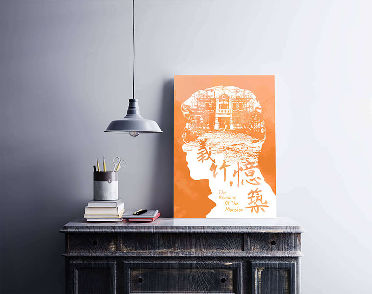

義竹，憶築
Short Film｜Jul. - Sept. 2016
我們利用一個暑假的時間，將課堂所學進行運用，拍出了這部5分鐘的紀錄片，並參加「永恆記憶x老屋數位微電影創作競賽」，最後晉級決賽。主辦單位將我們的影片放置於Facebook粉專上，共獲得1.4K人次觀看、2557人按讚、126留言與308次分享。
角色 導演
能力 團隊溝通&協調、影片架構、訪談、攝影、Premiere

主視覺海報
簡介
砌紅磚，堆瓦牆，堆砌的是歷史記憶；祭祖先，奉遺訓，祭奉的是家族精神。 翁清江宅——由義竹翁氏家族於1919 年建立——經歷興衰、修築、定為古蹟，透過翁家後人英惠之口，我們將一窺斑駁記憶中的時光剪影。